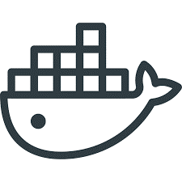
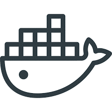
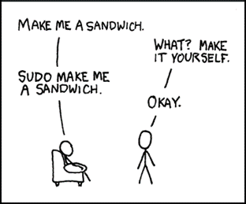

4.1 Installing RStudio Connect
In this session
In this sessions, you:
- Prepare to install RStudio Connect
- Pre-requisites
- Design decisions
- Download and install Connect
The mental model of Connect
Climbing a Mountain vs Cimbing a Tree

Getting from A to B isn't going to be like climbing a mountain, it's like climbing a tree (picking which fork to follow amongst numerous branches).
Finding Information
Refer to the product documentation at:
This course is about teaching you to fish, not giving fish.
- Open up the guide, this will be a resource throughout the course and will help you decide which branch to pick.
Installation requirements
Installing Connect - Where?
 

Support article: Configuration and sizing recommendations
Installing Connect - Where?
Typical questions
-
How big a server?
- It all depends on what your content will be doing in R.
- It is best to learn over time and crawl-walk-run where possible.
- The support article Configuration and sizing recommendations provides some suggestions.
-
Docker?
- Connect is designed to run on a persistent server, think SharePoint.
- As you will see, it internally runs and isolates user submitted code, manages processes, sandboxes permissions, etc.
- You will get into this more, but all these aspects make it a bit of an odd fit for Docker. That said, it's possible, but must be run in a privileged container.
- Running in a privileged container may reduce the amount of process isolation that Docker offers. Whether it is still worth dockerizing is a choice you must make.
-
What operating system?
- Connect is supported on RHEL, Ubuntu and SUSE
- Refer to Requirements for RStudio Connect
- For data science work we recommend Ubuntu
Installing Connect - How?

Installation of RStudio Connect requires root permissions.
- (We will explain why later.)
- TL;DR: Requirement comes from a strict security viewpoint.
System requirements
System requirement: R
Where can R be installed?
https://docs.rstudio.com/connect/admin/r
which R
Rscript -e 'R.home()'
Notice that neither path includes a version.
System requirement: Build R from pre-compiled binaries
RStudio Connect is all about "deploy and forget". This means you don't want existing content to break when R is upgraded.
To achieve this, RStudio Connect supports multiple versions of R.
Recommended best practice:
- Install R from pre-compiled binaries
-
Store in version specific locations, for example:
-
/opt/R/3.5.0 /opt/R/3.6.0/opt/R/3.6.1
Upgrading R
Because Connect supports multiple versions of R, the upgrading decision is easy:
Upgrading R is as simple as installing another version of R side-by-side.
- Again, be sure to install R from pre-compiled binaries!
Important: avoid upgrading by using your repository:
- Avoid
apt-get upgrade!!! - Avoid
yum upgrade!!!
Installing Connect
Installing Connect: server sizing?
Q: What type of server should Connect run on? (Memory, CPU, etc).
A: It depends. You should be able to answer this question by the end of the course.
- General guidelines here
- It all depends on what your content will be doing in R.
- Best to learn over time and crawl-walk-run where possible.
Installing Connect: Docker?
Q: Can I use Connect in a Docker container?
A: Possible but not recommended.
- RSC is designed to run on a persistent server (think SharePoint).
- As you'll see, it internally runs and isolates user submitted code, manages processes, sandboxes permissions, etc.
- All these aspects make it a bit of an odd fit for Docker.
- That said, it's possible, but will require a privileged container. This means some of the process isolation offered by docker will not be available.
Downloading Connect
Download page links to current version:
https://docs.rstudio.com/rsc/installation/
Screencast: download and install Connect
Your turn
Next complete the exercise.
Signs of success:
- The connect log indicates that Connect is listening on port 3939
- You successfully get the Connect landing page